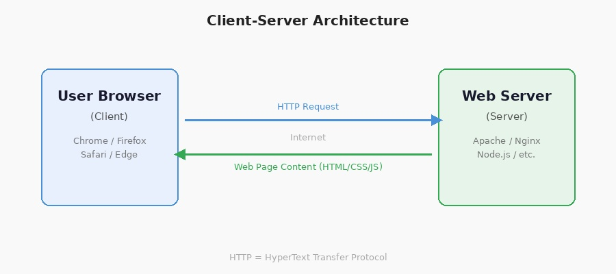

Web Servers
A web server is a computer system that stores, processes, and delivers web pages to users over the internet. It uses the client-server model, where the server waits for client requests and responds with the requested content.
Web servers use HTTP (HyperText Transfer Protocol) to communicate with web browsers. When you visit a website, your browser sends a request to the server, which then responds with the HTML, images, CSS, and other resources that make up the page.
Key Server Ports:
- Port 80 — HTTP (unencrypted web traffic)
- Port 443 — HTTPS (SSL/TLS encrypted traffic)
- Port 21 — FTP (File Transfer Protocol)
- Port 22 — SSH/SFTP (secure file transfer)
Common HTTP Status Codes:
- 200 OK — Request successful
- 301 Moved Permanently — Resource has moved permanently
- 304 Not Modified — Cached version is still valid
- 400 Bad Request — Server cannot process malformed request
- 401 Unauthorized — Authentication required
- 403 Forbidden — Access denied
- 404 Not Found — Resource not found
- 500 Internal Server Error — Generic server error
- 503 Service Unavailable — Server temporarily overloaded
How Web Servers Work:
- Receive Request: The server listens on port 80 (HTTP) or port 443 (HTTPS) for incoming requests from clients.
- Process Request: The server parses the HTTP request and determines which resource is being requested.
- Locate Resource: The server finds the requested file (HTML, image, CSS, etc.) on the filesystem or generates dynamic content.
- Build Response: The server creates an HTTP response including status code, headers, and the requested content.
- Send Response: The server transmits the response back to the client's browser.

Client-Server Architecture
Server Farm / Data Center
Popular web server software:
- Apache HTTP Server (1995): Open-source web server developed by the Apache Software Foundation. Currently the most widely used server software, powering ~31% of all websites (2024 data).
- Nginx (2004): Created by Igor Sysoev, known for high performance and low memory usage. Powers ~34% of top 1000 websites. Excellent for handling concurrent connections.
- Microsoft IIS (1995): Internet Information Services, integrated with Windows Server. Tight integration with .NET applications and Active Directory.
- LiteSpeed (2000): Commercial web server with a free OpenLiteSpeed version. Known for Apache-compatible features with better performance and built-in caching.
Types of Web Hosting:
- Shared Hosting: Multiple websites share resources on a single server. Cost-effective but limited performance.
- Virtual Private Server (VPS): Virtualized server with dedicated resources. Better performance and customization.
- Dedicated Server: Entire physical server dedicated to one user. Maximum control and performance.
- Cloud Hosting: Resources distributed across multiple servers, offering scalability and high availability.
- Container Hosting: Uses containerization (Docker, Kubernetes) for lightweight, portable application deployment.
← Back to Glossary